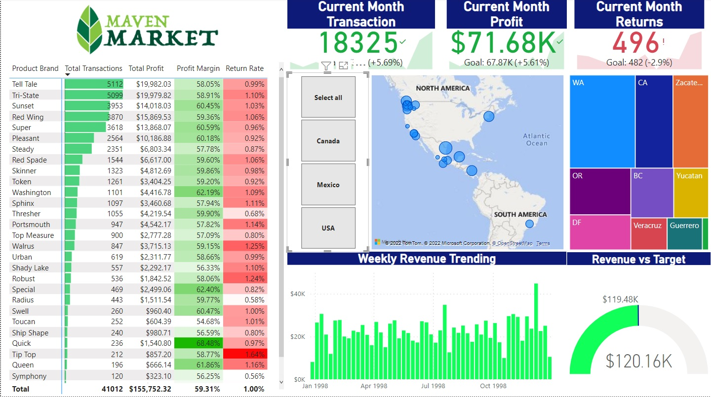
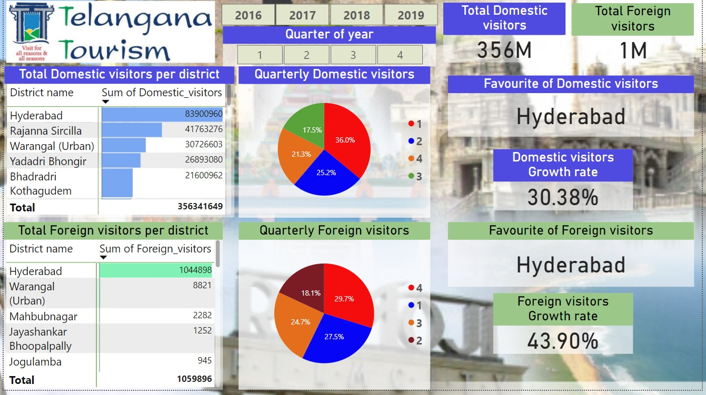

This project was completed as part of my Power BI course project from Udemy.
Here, I created interactive dashboards from multiple csv files. I performed data cleaning using Power Query and created valid relationships between multiple tables.
I also transformed and processed the data by creating DAX measures and calculated columns.

This is an SQL Data Analysis project done using PostgreSQL.
Here, I have analyzed Olympics historical data from 1896 to 2016.
For completing this project, I have used concepts like Aggregations, Filtering, Table Joins, CTEs, Window Functions etc.
This is my personal Data Analysis project completed using Power BI.
Here, I have created relevant table to establish relationships, performed data cleaning and created relevant DAX measures.
As a result, I have derived various insights from the visuals for better understanding of the data.
